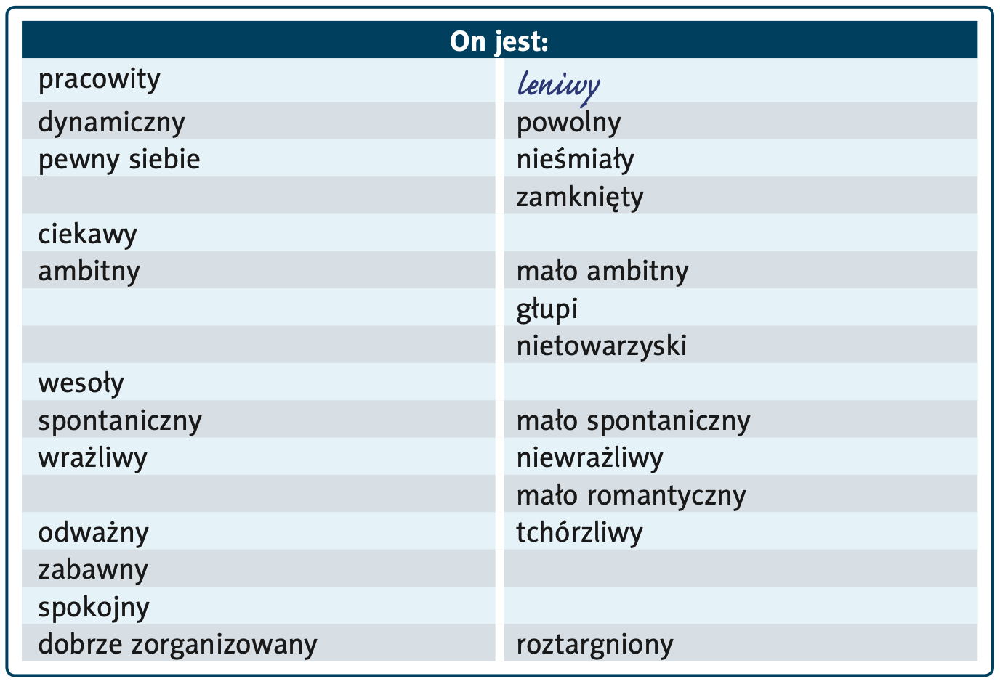
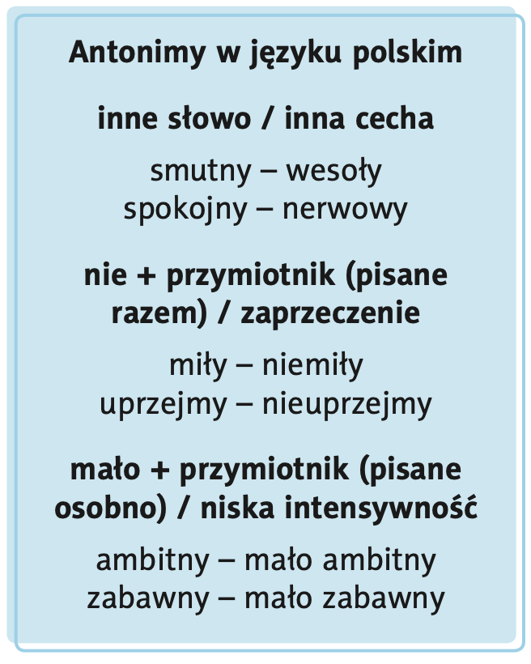
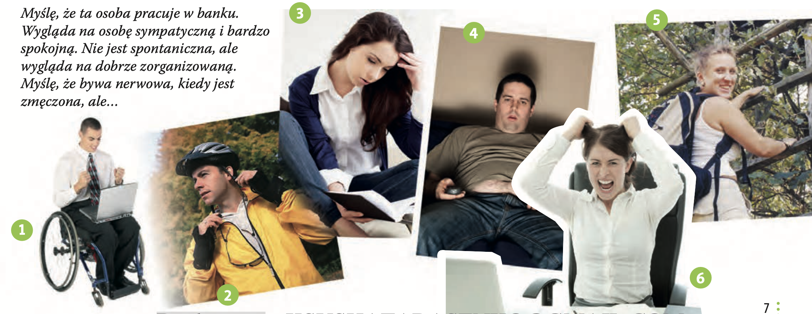

-
Robert / być / świetny / piłkarz – Robert jest świetnym
piłkarzem.
- Robert / być / pracowity i ambitny / sportowiec –
- Robert / być/ przystojny / mężczyzna –
- Robert / być / zamknięty w sobie, zbyt poważny / człowiek –
-
- Alicja / być / znakomita / aktorka –
- Alicja / być / piękna, sympatyczna i skromna / kobieta –
- Alicja / być / sympatyczna i skromna / dziewczyna –
-
- Andrzej / być / tajemniczy / człowiek –
- Andrzej / być / introwertyk –
- Andrzej / być / nudny i przeciętny / mężczyzna –
- Andrzej / być / wrażliwy / artysta -
- Andrzej / bywać / cyniczny -
Hura po Polsku - 2
Temat 1 - Osobowość
Lekcja 01 - Słownictwo
Słownictwo nowe >>
 1_A - Proszę przeczytać tekst i
uzupełnić tabelę.
1_A - Proszę przeczytać tekst i
uzupełnić tabelę.
«Polscy celebryci» – «Польские знаменитости»
Są znani w Polsce, a niektórzy na całym świecie. Dostają nagrody filmowe, literackie, telewizyjne. Mają tysiące fanów, piszą o nich gazety i internauci. Ich profile na mediach społecznościowych dostają setki polubień dziennie. Polscy celebryci to ludzie, którzy zdobyli sławę dzięki swojej ciężkiej pracy i talentom. Są kontrowersyjni, dlatego nie wszyscy ich lubią, zdarza się, że bywają ostro krytykowani. Za co lubimy polskich celebrytów? Co nas w nich irytuje? Oto, co o swoich ulubieńcach piszą fani na Facebooku.
tłumaczenie
Они известны в Польше, а некоторые — во всём мире. Получают кино-, литературные и телевизионные награды. У них тысячи фанатов, о них пишут газеты и интернет-пользователи. Их профили в социальных сетях получают сотни «лайков» ежедневно. Польские знаменитости — это люди, которые завоевали славу благодаря своему упорному труду и талантам. Они — личности спорные, поэтому не всем они нравятся, бывает, что их жёстко критикуют. За что мы любим польских знаменитостей? Что в них нас раздражает? Вот что о своих любимцах пишут фанаты на Facebook.
Robert Lewandowski

Piłkarz, członek polskiej reprezentacji, zawodnik klubu Bayern Monachium.
Robert
to świetny piłkarz, pracowity i ambitny. Robert
jest bardzo przystojny, wygląda jak model. Niektórzy
dziennikarze mówią, że wadą Roberta jest jego intrower-
tyzm. Jest zamknięty w sobie i trochę zbyt poważny na boisku.
tłumaczenie
Роберт Левандовский
Футболист, член польской сборной, игрок
клуба «Бавария» (Мюнхен).
Роберт — отличный футболист, трудолюбивый и амбициозный. Он очень красив,
выглядит как модель. Некоторые журналисты говорят, что его недостаток —
интровертность. Он замкнут в себе и чуть слишком серьёзен на поле.
Andrzej Sapkowski

Pisarz, autor sagi „Wiedźmin” na podstawie której
powstała znana na całym świecie gra komputerowa pod tym samym tytułem.
Bardzo
tajemniczy człowiek, introwertyk. Ukrywa
swoje życie prywatne i poglądy polityczne. Wygląda na
przeciętnego, nudnego mężczyznę, ale tak naprawdę to wrażliwy artysta
o niezwykłej wyobraźni literackiej, którego uwielbiają miliony czytelni-
ków i fanów gry Wiedźmin. Bywa cyniczny.
tłumaczenie
Анджей Сапковский
Писатель, автор саги «Ведьмак», по которой была
создана всемирно известная компьютерная игра с тем же названием.
Очень таинственный человек, интроверт. Прячет свою личную жизнь и политические
взгляды. Выглядит как обычный, скучный мужчина, но на самом деле он —
чувствительный художник с необычайным литературным воображением, которого
обожают миллионы читателей и фанатов игры «Ведьмак». Бывает циничен.
Lech Wałęsa

Polityk, legendarny przywódca Solidarności, polski prezydent w latach
1990 – 1995. Laureat pokojowej Nagrody Nobla.
Wałęsa jest żywą legendą,
symbolem upadku komunizmu
w Europie. Bardzo niezależny człowiek, odważny i chary-
zmatyczny. Ma wielu wrogów, którzy uważają, że jest arogancki. Wałęsa
to bardzo kontrowersyjna postać w polskiej polityce.
tłumaczenie
Лех Валенса
Политик, легендарный лидер «Солидарности», президент
Польши в 1990–1995 годах. Лауреат Нобелевской премии мира.
Валенса — живая легенда, символ падения коммунизма в Европе. Очень независимый
человек, смелый и харизматичный. У него много врагов, которые считают его
высокомерным. Валенса — очень противоречивая фигура в польской политике.
Alicja Bachleda-Curuś

Aktorka znana w Polsce i za granicą. Światową sławę przyniosła jej rola w filmie
„Ondine”, gdzie poznała swojego przyszłego partnera Collina Farrella.
Alicja to
przede wszystkim znakomita aktorka, ale też
piękna kobieta. Ludzie, którzy znają Alicję prywatnie,
mówią, że jest sympatyczna i skromna, typ „dziewczyny z sąsiedztwa”.
Wiele koleżanek aktorek zazdrości Alicji sławy i pieniędzy, mówią, że
jest zarozumiałą snobką. Kto wie, jak jest naprawdę?
tłumaczenie
Алиция Бахледа-Чуруш
Актриса, известная в Польше и за рубежом.
Мировую славу ей принесла роль в фильме «Ондин», где она познакомилась со
своим будущим партнёром Колином Фарреллом.
Алиция прежде всего — замечательная актриса, но ещё и красивая женщина. Люди,
которые знают Алицию лично, говорят, что она симпатичная и скромная, «девушка из
соседнего дома». Многие коллеги-актрисы завидуют Алиции её славе и деньгам,
утверждая, что она — заносчивая снобка. Кто знает, как оно на самом деле?
Agnieszka Holland

Reżyser filmowy, kręci filmy w Polsce i za granicą, laureatka wielu nagród filmowych.
Trzykrotnie nominowana do Oscara, między innymi za film „W ciemności” .
Pani
Agnieszka jest świetnym reżyserem, moim zdaniem
najlepszym w Polsce. Myślę, że to bardzo mądra i doświad-
czona kobieta i wrażliwa artystka. Jest zaangażowana politycznie i myślę, że
jest czasami zbyt krytyczna i surowa dla ludzi.
tłumaczenie
Агнешка Холланд
Кинорежиссёр, снимает фильмы в Польше и за
рубежом, лауреатка множества кинонаград. Трижды номинирована на «Оскар», в
том числе за фильм «Во тьме».
Пани Агнешка — отличный режиссёр, по моему мнению лучший в Польше. Я считаю, что
это очень мудрая и опытная женщина и чуткая художница. Она политически активна,
и, как мне кажется, иногда бывает слишком критичной и строгой к людям.
Joanna Przetakiewicz

Projektantka mody, jej marka La Mania jest znana na całym świecie i sprzedawana
w słynnym londyńskim sklepie „Harrods”.
Pani Joanna ma wielu znanych przyjaciół
i wielu wrogów.
Wygląda na delikatną, ale myślę, że to twarda kobieta
interesu, która wie, jak się sprzedać. Ludzie, którzy jej nie lubią, mówią,
że jest niemiła i zbyt pewna siebie. Z pewnością to bardzo ambitna
i dynamiczna osoba i oryginalna projektantka. Uwielbiam jej projekty.
Jej największą zaletą jest wiara w siebie i optymizm.
tłumaczenie
Йоанна Пржетакиевич
Дизайнер моды, её бренд La Mania известен во
всём мире и продаётся в легендарном лондонском магазине «Harrods».
Пани Йоанна имеет среди знакомых много знаменитых людей, но у неё также много
врагов. Выглядит она хрупкой, но, как мне кажется, это жёсткая бизнес-леди,
которая умеет себя преподнести. Те, кто её не любят, говорят, что она
недоброжелательна и слишком самоуверенна. Несомненно, она очень амбициозный и
динамичный человек и оригинальный дизайнер. Обожаю её коллекции. Её главная
сильная сторона — вера в себя и оптимизм.
Odpowiedź
Objaśnienie wyboru cech:
-
Andrzej Sapkowski
-
Zalety: wrażliwy artysta, niezwykła wyobraźnia literacka, uwielbiany przez miliony czytelników i fanów „Wiedźmina”
-
Wady: introwertyzm, skrytość (ukrywa życie prywatne i poglądy), bywa cyniczny
-
-
Lech Wałęsa
-
Zalety: żywa legenda, symbol upadku komunizmu w Europie, niezależny, odważny, charyzmatyczny
-
Wady: arogancja, kontrowersyjność
-
-
Alicja Bachleda-Curuś
-
Zalety: znakomita aktorka, piękna, sympatyczna, skromna („dziewczyna z sąsiedztwa”)
-
Wady: według niektórych zarozumiała, snobka
-
-
Agnieszka Holland
-
Zalety: świetna reżyserka, mądra, doświadczona, wrażliwa artystka
-
Wady: zbyt krytyczna, zbyt surowa wobec ludzi
-
-
Joanna Przetakiewicz
-
Zalety: twarda kobieta interesu, wie, jak się sprzedać, ambitna, dynamiczna, oryginalna projektantka, wiara w siebie, optymizm
-
Wady: niemiła (według niektórych), zbyt pewna siebie, zarozumiała, ma wielu wrogów
-
 1_B - Gramatyka / Proszę zmienić
zdania według wzoru.
1_B - Gramatyka / Proszę zmienić
zdania według wzoru.
Odpowiedź
- Robert jest pracowitym i ambitnym sportowcem.
- Robert jest przystojnym mężczyzną.
- Robert jest zamkniętym w sobie i zbyt poważnym człowiekiem.
- Alicja jest znakomitą aktorką.
- Alicja jest piękną, sympatyczną i skromną kobietą.
- Alicja jest sympatyczną i skromną dziewczyną.
- Andrzej jest tajemniczym człowiekiem.
- Andrzej jest introwertykiem.
- Andrzej jest nudnym i przeciętnym mężczyzną.
- Andrzej jest wrażliwym artystą.
- Andrzej bywa cyniczny.
pracowity - трудолюбивый
ambitny - амбициозный
przystojny - красивый
piękna - хорошая
sympatyczny - симпатичный
niezdecydowany - нерешительный
zamknięty - закрыт
poważny - серьезный
znakomity - отличный
uprzejmy - вежливый
tchórzliwy - трусливый
roztargniony - несосредоточенный
 01 -
1_C - Proszę uzupełnić zdania, a następnie wysłuchać dwóch wypowiedzi i porównać swoją
wersję z nagraniem.
01 -
1_C - Proszę uzupełnić zdania, a następnie wysłuchać dwóch wypowiedzi i porównać swoją
wersję z nagraniem.
a) aktualny, dziennikarka, ciekawy, publiczny
dziennikarką
Monika Olejnik jest dziennikarką. Pracuje w radiu i w telewizji,
rozmawia
z politykami i z osobami .....................
o ................................. problemach. Jej programy są bardzo
................................. .
b) różny, znany, podróżować
Ryszard Kapuściński był ................................. w Polsce i w Europie pisarzem. Ten
publicysta dużo .....................................
i pisał książki
–
reportaże z .................................... kontynentów.
Odpowiedź
- Monika Olejnik jest dziennikarką. Pracuje w radiu i w telewizji, rozmawia z politykami i z osobami publicznymi o aktualnych problemach. Jej programy są bardzo ciekawe.
- Ryszard Kapuściński był znamym w Polsce i w Europie pisarzem. Ten publicysta dużo podróżował i pisał książki – reportaże z różnych kontynentów.
 1_D - Proszę uzupełnić tabelę za
pomocą podanych w ramce przymiotników o znaczeniu przeciwnym:
1_D - Proszę uzupełnić tabelę za
pomocą podanych w ramce przymiotników o znaczeniu przeciwnym:
Ниже дано короткое объяснение основных моментов:
-
Как образуются антонимы (противоположные прилагательные) в польском языке.
-
Употребление падежей с прилагательными:
когда нужно использовать именительный (mianownik), винительный (biernik) и творительный (narzędnik). -
Разница между „On jest niezdecydowany” и „On bywa niezdecydowany”.
1. Образование антонимов в польском


На схеме слева перечислены пары прилагательных
- Другой корень (абсолютно разное слово)
Например:
- smutny – wesoły (грустный – весёлый)
- spokojny – nerwowy (спокойный – нервный)
- odważny – tchórzliwy (смелый – трусливый)
-
„nie + прилагательное” (пишется слитно) – прямое отрицание
Такой способ используется, когда нет «удобного» отдельного антонима или хотят подчеркнуть
отрицательный оттенок без нового корня:
- miły – niemiły (приятный – неприятный)
- uprzejmy – nieuprzejmy (вежливый – невежливый)
-
„mało + прилагательное” (пишется раздельно) – означает «слабая/низкая степень
признака»
Используется, когда нужно сказать «немного, недостаточно…»:
- ambitny – mało ambitny (амбициозный – мало‐амбициозный, т. е. «не такой амбициозный»)
- zabawny – mało zabawny (забавный/смешной – мало забавный)
На картинке в правой рамке эти три способа выделены:
- Иной корень (другое слово): spokojny – nerwowy, smutny – wesoły и т. д.
- nie + прилагательное: miły – niemiły, uprzejmy – nieuprzejmy и т. п.
- mało + прилагательное: ambitny – mało ambitny, zabawny – mało zabawny.
2. Падежи с прилагательными
On / Ona wygląda na mądrego człowieka / mądrą osobę. (biernik)
On jest tak samo miły jak
Ona jest tak samo miła jak jej siostra. (mianownik)
On jest niezdecydowany. (mianownik)
On jest niezdecydowanym człowiekiem. (narzędnik)
2.1. «On/Ona wygląda na … (biernik)»
Когда мы говорим «Кто-то выглядит кем-то/чем-то», в польском после глагола wygląda na прилагательное (или существительное с прилагательным) ставится в винительном падеже (biernik).
Пример:
On/Ewa wygląda na mądrego człowieka / mądrą osobę.
Здесь «mądrego człowieka» и «mądrą osobę» – обе фразы стоят в винительном (biernik):
- mądry (им. п.) → mądrego (вин. п. для м. р., ед.ч.)
- mądra osoba (им. п.) → mądrą osobę (вин. п. для ж. р., ед.ч.)
Значит, перевод: «Он/Она выглядит как умный человек/умная особа».
2.2. «On jest tak samo miły jak … (mianownik)» и «Ona jest tak samo miła jak … (mianownik)»
При сравнении «такой же …, как …» (tak samo … jak …) прилагательные в обеих частях ставятся в именительном падеже (mianownik), потому что мы говорим утверждение о признаке подлежащего:
Пример:
On jest tak samo miły jak jego
Ona jest tak samo miła jak jej siostra.
«Он такой же приятный (милий) как его сестра», «Она такая же милая как её сестра». Здесь «miły/miła» – именительный, так же «jego siostra» и «jej siostra» у нас тоже в именительном, потому что это подлежащее сравнения.
2.3. «On jest niezdecydowany. (mianownik)» и «On jest niezdecydowanym człowiekiem. (narzędnik)»
-
Фраза «On jest niezdecydowany» – «Он (в общем) нерешительный». Поскольку «jest» –
связка, а «niezdecydowany» в данном случае – сказуемое (прилагательное), оно стоит в
именительном падеже (mianownik).
- On (podmiot, mianownik) jest (orzecznik) niezdecydowany (orzecznik w mianowniku).
-
Фраза «On jest niezdecydowanym człowiekiem» – «Он есть нерешительный человек». Здесь
«człowiekiem» – существительное «человек» в творительном падеже (narzędnik), а
прилагательное «niezdecydowanym» стоит перед ним и согласуется с «człowiekiem» в
творительном.
- On (podmiot, mianownik) jest (orzecznik) niezdecydowanym (przymiotnik, narzędnik) człowiekiem (rzeczownik, narzędnik).
Просто запомним: после глагола «jest» могут быть:
- Сказуемое – прилагательное в именительном (если говорим просто «Он нерешительный»).
- Сказуемое – словосочетание «прилагательное + существительное» (человек, студент, учитель) в творительном: «jest + [przymiotnik (narzędnik) + rzeczownik (narzędnik)]».
3. Разница между «On jest niezdecydowany» и «On bywa niezdecydowany»
3.1. «On jest niezdecydowany»
- Это утверждение о постоянном, устойчивом свойстве человека. Говорящий считает, что он (в целом) нерешительный – это часть его характера или достаточно часто повторяющийся признак.
- Перевод на русский: «Он нерешительный» (т. е. это его постоянная черта).
3.2. «On bywa niezdecydowany»
- Форма «bywa» (от глагола bywać) означает «иногда бывает», «временами». То есть мы говорим не о том, что он всегда нерешителен, а о том, что он иногда, время от времени, бывает нерешительным.
- Перевод: «Иногда он бывает нерешительным».
- Здесь подчёркивается, что нерешительность не постоянна, а повторяется эпизодически.
 1_E - Proszę wybrać jedną z osób znajdujących się na fotografiach. Proszę opisać tę osobę koledze / koleżance,
a następnie zapytać, czy wie, o kim Pan / Pani mówi.
1_E - Proszę wybrać jedną z osób znajdujących się na fotografiach. Proszę opisać tę osobę koledze / koleżance,
a następnie zapytać, czy wie, o kim Pan / Pani mówi.
